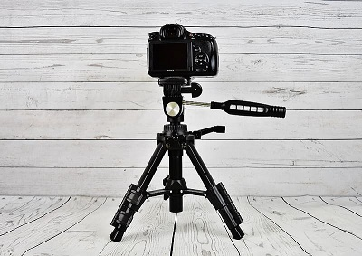
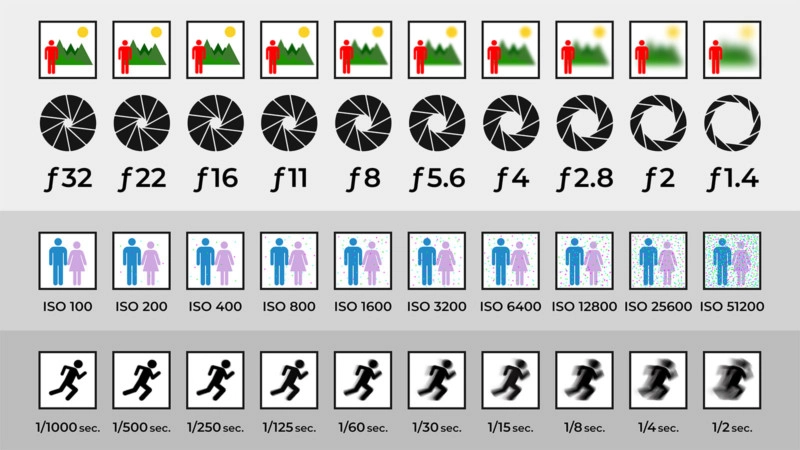

Beginners Mistake
Peter McKinnon is a professional photographer that produces lots of useful tutorials and uploads them for free on YouTube. His tutorials are great and easy to understand and follow as he has in-depth explanations of everything he talks about in his videos. The video on the left is one of his best videos for beginners, as he explains and goes through some of the most common mistakes that beginners make and should avoid. Don't make the same mistake as others and watch the video!
Want to step your photography game up even further? Take a look at some of the tips down below!
THE TRIPOD!
THE TRIPOD! This is one of the most common mistakes that beginners make. They underestimate the power of the tripod. They simply look past them and constantly ask themselves,
"Why are my photos blurry?"
"Why can't I take low-light photos?"
"How can I take better pictures?"
Well, in case you still dont know the answer yet... GET A TRIPOD! No seriously, the amount of things you are able to do with a tripod is insane. Tripods can be used in many different situations such as still photography, low-light photography and portraits.
Not only does a tripod hold your camera still, but it also helps keep your camera in level so you're not taking tilted images. To tell if your camera is in level when on a tripod, you can enable the Viewfinder or Live View mode on a camera (your camera might have this feature named differently, but it is the button that allows you to see what the camera sees, but on the screen).
A tripod also helps keep your subject centered. For example, if you were taking a picture of an object, or a person, you would want them to be in the center on the picture right? Well there is an option on your camera that allows you center your images, or at least help you in doing so. This feature should be the same on each camera, and it is called the Grid, or Viewfinder Grid. Every camera should have it enabled by default when looking through the eyepiece viewfinder. You can also enable it in the on-screen viewfinder through your camera settings.
The most interesting way to use a tripod is for low-light photography. Low-light photography is taking pictures in low light circumstances, or outdoors at night. A tripod can be used to make your pictures in low light appear much brighter and sharper than when holding the camera in your hand. While the camera is on a tripod in low-light, you are able to lower the shutter speed and the ISO sensitivity to take brighter pictures. Your aperture setting can also be wider than usual. All of these settings will be explained in a table further down this page. The best thing you can do with a tripod at night is take Long Exposure shots of cars, the sky or whatever you want. Here are some examples of what Long Exposure shots looks like:
Below is table that perfectly depicts what the three main camera settingd do. The three main camera settings that you should keep an eye on when shooting are the ISO Sensitivity, Aperture and Shutter Speed:
As you can see in the image above, the Aperture or f-stop, marked by the letter 'f', determines how blurry the background of the subject is. For example is you were taking a pciture of a landscape, you would have a smaller Aperture (bigger f-stop) to capture as many elements as you can in focus. When taking a photo of a sinle object like a person or a flower, you would have a bigger Aperture (smaller f-stop) to focus more on the object you are taking a picture of. It is important to note, and many people get confused my this, that the bigger the Aperture, the more light enters the camera lens, therefore you would have to lower the ISO Sensitivity or increse the Shutter Speed to make sure the images don't turn out to be too bright. Also, when taking a picture with a smaller Aperture, less light enters the camera lens, therefore you will have to increase the ISO sensitivity or lower the Shutter Speed to make the photos brighter. This is when the tripod comes in really handy!
In Conclusion
There are many more ways to make your photography experience easier and more enjoyable. The main thing to remember is to keep an eye out on the three settings discussed above, and you should be taking the perfect picture every time. Also, don't forget your tripod!